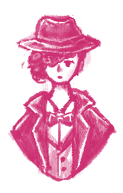
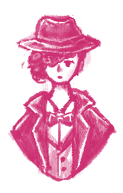
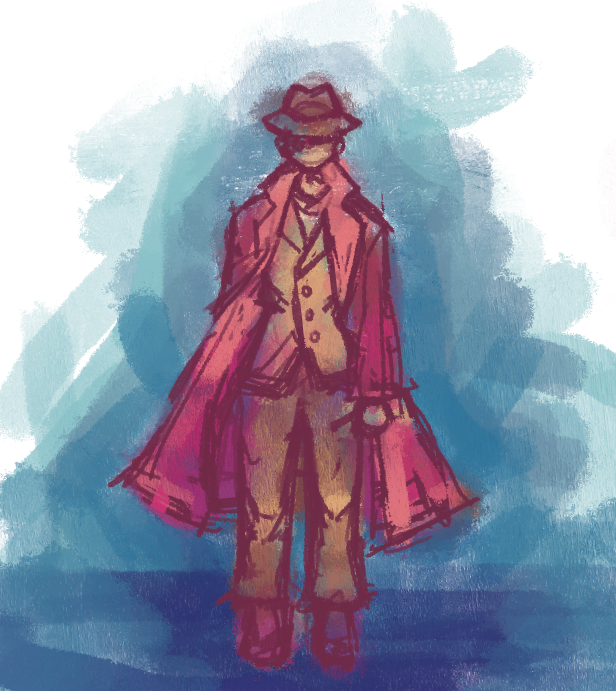

Ghost City
- Role: Design Lead & Artist
- Timeline: ???
- Tools: Unity, C++, Aseprite
- Teammate(s): m a n y (8+)
11/18
Since I now have this site running, I plan to use this page as a progress log for this project.
Our main character is a detective that used to be an electrical engineering student
trying to turn on the city's generators because someone is framing her for the sabotage.
 

Artistic inspirations include: noir detectives, victorian women's updo hairstyles, and 1920s suits.

I am also working on a pixel art version of the main character. This is a draft of the design using
aseprite default colors, which might be something I want to change.